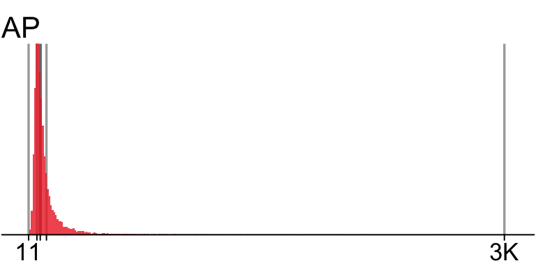
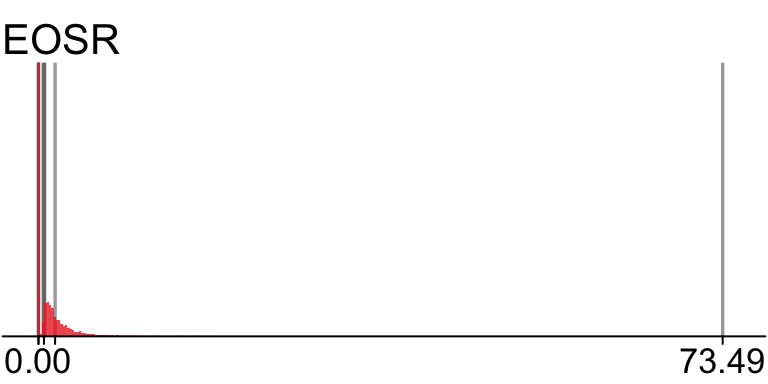
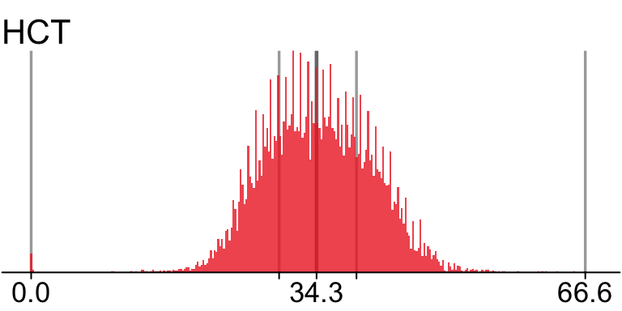
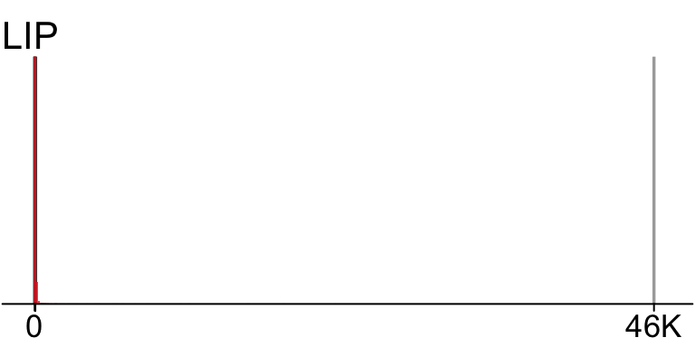
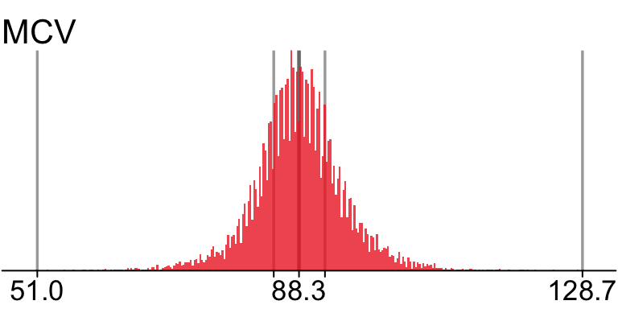
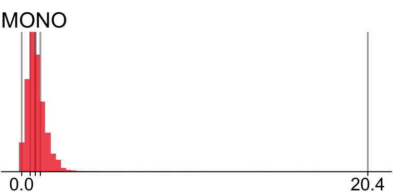
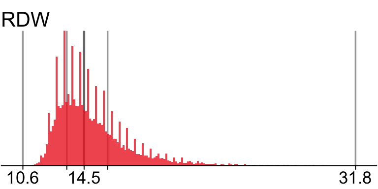
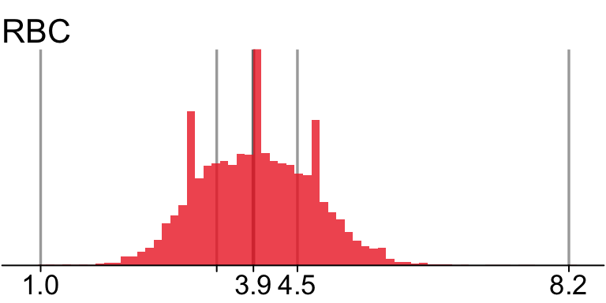

Appendix D — Univariate distribution checks
This section reports a series of univariate summary checks of the bacteremia dataset.
D.1 U2: Descriptive summaries
D.1.1 U2: Remaining predictors
We present a visual summary.




















And a descriprive summary
remaining_predictors
38 Variables 14691 Observations
38 Variables 14691 Observations
MCV: Parameter analysis value (Numeric)

| n | missing | distinct | Info | Mean | Gmd | .05 | .10 | .25 | .50 | .75 | .90 | .95 |
|---|---|---|---|---|---|---|---|---|---|---|---|---|
| 14649 | 42 | 506 | 1 | 88.35 | 6.992 | 78.2 | 81.1 | 84.7 | 88.3 | 92.0 | 95.9 | 99.0 |
HGB: Parameter analysis value (Numeric)

| n | missing | distinct | Info | Mean | Gmd | .05 | .10 | .25 | .50 | .75 | .90 | .95 |
|---|---|---|---|---|---|---|---|---|---|---|---|---|
| 14650 | 41 | 157 | 1 | 11.57 | 2.558 | 8.2 | 8.8 | 9.9 | 11.4 | 13.2 | 14.6 | 15.4 |
HCT: Parameter analysis value (Numeric)

| n | missing | distinct | Info | Mean | Gmd | .05 | .10 | .25 | .50 | .75 | .90 | .95 |
|---|---|---|---|---|---|---|---|---|---|---|---|---|
| 14649 | 42 | 404 | 1 | 34.48 | 7.316 | 24.6 | 26.4 | 29.8 | 34.3 | 39.1 | 42.9 | 44.8 |
MCH: Parameter analysis value (Numeric)

| n | missing | distinct | Info | Mean | Gmd | .05 | .10 | .25 | .50 | .75 | .90 | .95 |
|---|---|---|---|---|---|---|---|---|---|---|---|---|
| 14649 | 42 | 232 | 1 | 29.58 | 2.693 | 25.3 | 26.7 | 28.4 | 29.7 | 31.0 | 32.4 | 33.4 |
MCHC: Parameter analysis value (Numeric)

| n | missing | distinct | Info | Mean | Gmd | .05 | .10 | .25 | .50 | .75 | .90 | .95 |
|---|---|---|---|---|---|---|---|---|---|---|---|---|
| 14649 | 42 | 124 | 0.999 | 33.47 | 1.546 | 31.1 | 31.7 | 32.6 | 33.5 | 34.4 | 35.2 | 35.6 |
RDW: Parameter analysis value (Numeric)

| n | missing | distinct | Info | Mean | Gmd | .05 | .10 | .25 | .50 | .75 | .90 | .95 |
|---|---|---|---|---|---|---|---|---|---|---|---|---|
| 14635 | 56 | 173 | 1 | 15 | 2.385 | 12.4 | 12.7 | 13.4 | 14.5 | 16.0 | 18.0 | 19.5 |
MPV: Parameter analysis value (Numeric)

| n | missing | distinct | Info | Mean | Gmd | .05 | .10 | .25 | .50 | .75 | .90 | .95 |
|---|---|---|---|---|---|---|---|---|---|---|---|---|
| 13989 | 702 | 71 | 0.999 | 10.38 | 1.132 | 8.9 | 9.2 | 9.7 | 10.3 | 11.0 | 11.7 | 12.2 |
LYM: Parameter analysis value (Numeric)

| n | missing | distinct | Info | Mean | Gmd | .05 | .10 | .25 | .50 | .75 | .90 | .95 |
|---|---|---|---|---|---|---|---|---|---|---|---|---|
| 14429 | 262 | 114 | 0.998 | 1.366 | 1.162 | 0.2 | 0.4 | 0.7 | 1.0 | 1.6 | 2.1 | 2.6 |
Value 0 5 10 15 20 30 35 40 45 75 100 115
Frequency 13675 703 27 7 4 2 1 1 1 1 1 1
Proportion 0.948 0.049 0.002 0.000 0.000 0.000 0.000 0.000 0.000 0.000 0.000 0.000
Value 150 360 365 375 580
Frequency 1 1 1 1 1
Proportion 0.000 0.000 0.000 0.000 0.000
For the frequency table, variable is rounded to the nearest 5 MONO: Parameter analysis value (Numeric)

| n | missing | distinct | Info | Mean | Gmd | .05 | .10 | .25 | .50 | .75 | .90 | .95 |
|---|---|---|---|---|---|---|---|---|---|---|---|---|
| 14445 | 246 | 67 | 0.996 | 0.8527 | 0.5965 | 0.1 | 0.3 | 0.5 | 0.8 | 1.1 | 1.5 | 1.8 |
EOS: Parameter analysis value (Numeric)

| n | missing | distinct | Info | Mean | Gmd | .05 | .10 | .25 | .50 | .75 | .90 | .95 |
|---|---|---|---|---|---|---|---|---|---|---|---|---|
| 14556 | 135 | 36 | 0.867 | 0.1148 | 0.1585 | 0.0 | 0.0 | 0.0 | 0.1 | 0.1 | 0.3 | 0.4 |
BASO: Parameter analysis value (Numeric)

| n | missing | distinct | Info | Mean | Gmd | .05 | .10 | .25 | .50 | .75 | .90 | .95 |
|---|---|---|---|---|---|---|---|---|---|---|---|---|
| 14545 | 146 | 18 | 0.337 | 0.01725 | 0.03111 | 0.0 | 0.0 | 0.0 | 0.0 | 0.0 | 0.1 | 0.1 |
Value 0.0 0.1 0.2 0.3 0.4 0.5 0.6 0.7 0.8 0.9 1.0 1.1
Frequency 12671 1636 109 59 31 14 6 7 1 2 1 2
Proportion 0.871 0.112 0.007 0.004 0.002 0.001 0.000 0.000 0.000 0.000 0.000 0.000
Value 1.2 1.3 1.4 1.5 2.2 6.5
Frequency 1 1 1 1 1 1
Proportion 0.000 0.000 0.000 0.000 0.000 0.000
NT: Parameter analysis value (Numeric)

| n | missing | distinct | Info | Mean | Gmd | .05 | .10 | .25 | .50 | .75 | .90 | .95 |
|---|---|---|---|---|---|---|---|---|---|---|---|---|
| 12224 | 2467 | 149 | 1 | 83.22 | 30.56 | 35 | 48 | 67 | 83 | 101 | 118 | 128 |
APTT: Parameter analysis value (Numeric)

| n | missing | distinct | Info | Mean | Gmd | .05 | .10 | .25 | .50 | .75 | .90 | .95 |
|---|---|---|---|---|---|---|---|---|---|---|---|---|
| 12142 | 2549 | 631 | 1 | 40.06 | 9.533 | 30.1 | 31.4 | 34.1 | 37.7 | 42.7 | 49.9 | 56.6 |
SODIUM: Parameter analysis value (Numeric)

| n | missing | distinct | Info | Mean | Gmd | .05 | .10 | .25 | .50 | .75 | .90 | .95 |
|---|---|---|---|---|---|---|---|---|---|---|---|---|
| 13409 | 1282 | 58 | 0.994 | 137.2 | 5.034 | 129 | 132 | 135 | 137 | 140 | 142 | 144 |
CA: Parameter analysis value (Numeric)

| n | missing | distinct | Info | Mean | Gmd | .05 | .10 | .25 | .50 | .75 | .90 | .95 |
|---|---|---|---|---|---|---|---|---|---|---|---|---|
| 13415 | 1276 | 185 | 1 | 2.214 | 0.2213 | 1.89 | 1.96 | 2.09 | 2.22 | 2.35 | 2.45 | 2.51 |
PHOS: Parameter analysis value (Numeric)

| n | missing | distinct | Info | Mean | Gmd | .05 | .10 | .25 | .50 | .75 | .90 | .95 |
|---|---|---|---|---|---|---|---|---|---|---|---|---|
| 13449 | 1242 | 306 | 1 | 1.048 | 0.3993 | 0.55 | 0.64 | 0.81 | 0.99 | 1.20 | 1.47 | 1.74 |
MG: Parameter analysis value (Numeric)

| n | missing | distinct | Info | Mean | Gmd | .05 | .10 | .25 | .50 | .75 | .90 | .95 |
|---|---|---|---|---|---|---|---|---|---|---|---|---|
| 12822 | 1869 | 146 | 0.999 | 0.8136 | 0.1609 | 0.59 | 0.64 | 0.72 | 0.81 | 0.89 | 0.98 | 1.06 |
HS: Parameter analysis value (Numeric)

| n | missing | distinct | Info | Mean | Gmd | .05 | .10 | .25 | .50 | .75 | .90 | .95 |
|---|---|---|---|---|---|---|---|---|---|---|---|---|
| 11630 | 3061 | 169 | 1 | 5.413 | 2.625 | 2.2 | 2.7 | 3.7 | 5.0 | 6.6 | 8.5 | 10.0 |
GBIL: Parameter analysis value (Numeric)

| n | missing | distinct | Info | Mean | Gmd | .05 | .10 | .25 | .50 | .75 | .90 | .95 |
|---|---|---|---|---|---|---|---|---|---|---|---|---|
| 13250 | 1441 | 885 | 1 | 1.406 | 1.477 | 0.33 | 0.39 | 0.53 | 0.77 | 1.23 | 2.34 | 3.96 |
TP: Parameter analysis value (Numeric)

| n | missing | distinct | Info | Mean | Gmd | .05 | .10 | .25 | .50 | .75 | .90 | .95 |
|---|---|---|---|---|---|---|---|---|---|---|---|---|
| 13108 | 1583 | 649 | 1 | 64.9 | 12.97 | 45.20 | 49.47 | 56.90 | 65.70 | 73.30 | 78.80 | 82.00 |
ALB: Parameter analysis value (Numeric)

| n | missing | distinct | Info | Mean | Gmd | .05 | .10 | .25 | .50 | .75 | .90 | .95 |
|---|---|---|---|---|---|---|---|---|---|---|---|---|
| 13015 | 1676 | 401 | 1 | 33.42 | 8.513 | 21.3 | 23.6 | 27.9 | 33.6 | 39.1 | 43.2 | 45.2 |
AMY: Parameter analysis value (Numeric)

| n | missing | distinct | Info | Mean | Gmd | .05 | .10 | .25 | .50 | .75 | .90 | .95 |
|---|---|---|---|---|---|---|---|---|---|---|---|---|
| 10778 | 3913 | 488 | 1 | 90.83 | 100.5 | 18 | 23 | 33 | 49 | 76 | 125 | 187 |
Value 0 500 1000 1500 2000 2500 4000 4500 5000 40500 44000 56000 Frequency 10432 268 39 14 12 4 2 2 2 1 1 1 Proportion 0.968 0.025 0.004 0.001 0.001 0.000 0.000 0.000 0.000 0.000 0.000 0.000For the frequency table, variable is rounded to the nearest 500
PAMY: Parameter analysis value (Numeric)

| n | missing | distinct | Info | Mean | Gmd | .05 | .10 | .25 | .50 | .75 | .90 | .95 |
|---|---|---|---|---|---|---|---|---|---|---|---|---|
| 7577 | 7114 | 280 | 0.999 | 41.66 | 47.28 | 7 | 9 | 14 | 22 | 36 | 64 | 97 |
Value 0 500 1000 1500 2000 3000 38500 Frequency 7495 65 7 6 2 1 1 Proportion 0.989 0.009 0.001 0.001 0.000 0.000 0.000For the frequency table, variable is rounded to the nearest 500
LIP: Parameter analysis value (Numeric)

| n | missing | distinct | Info | Mean | Gmd | .05 | .10 | .25 | .50 | .75 | .90 | .95 |
|---|---|---|---|---|---|---|---|---|---|---|---|---|
| 10992 | 3699 | 444 | 1 | 63.82 | 89.88 | 6 | 8 | 14 | 23 | 40 | 79 | 135 |
CHE: Parameter analysis value (Numeric)

| n | missing | distinct | Info | Mean | Gmd | .05 | .10 | .25 | .50 | .75 | .90 | .95 |
|---|---|---|---|---|---|---|---|---|---|---|---|---|
| 12244 | 2447 | 997 | 1 | 4.79 | 2.378 | 1.70 | 2.17 | 3.15 | 4.60 | 6.22 | 7.65 | 8.49 |
AP: Parameter analysis value (Numeric)

| n | missing | distinct | Info | Mean | Gmd | .05 | .10 | .25 | .50 | .75 | .90 | .95 |
|---|---|---|---|---|---|---|---|---|---|---|---|---|
| 13291 | 1400 | 672 | 1 | 118.8 | 91.51 | 42 | 49 | 63 | 84 | 123 | 206 | 302 |
LDH: Parameter analysis value (Numeric)

| n | missing | distinct | Info | Mean | Gmd | .05 | .10 | .25 | .50 | .75 | .90 | .95 |
|---|---|---|---|---|---|---|---|---|---|---|---|---|
| 12977 | 1714 | 1137 | 1 | 331.2 | 240.9 | 136 | 152 | 187 | 239 | 332 | 508 | 724 |
CK: Parameter analysis value (Numeric)

| n | missing | distinct | Info | Mean | Gmd | .05 | .10 | .25 | .50 | .75 | .90 | .95 |
|---|---|---|---|---|---|---|---|---|---|---|---|---|
| 12611 | 2080 | 1506 | 1 | 385 | 615.4 | 18 | 25 | 42 | 80 | 184 | 577 | 1155 |
GLU: Parameter analysis value (Numeric)

| n | missing | distinct | Info | Mean | Gmd | .05 | .10 | .25 | .50 | .75 | .90 | .95 |
|---|---|---|---|---|---|---|---|---|---|---|---|---|
| 10499 | 4192 | 389 | 1 | 126.4 | 48.3 | 78 | 85 | 97 | 113 | 138 | 177 | 216 |
TRIG: Parameter analysis value (Numeric)

| n | missing | distinct | Info | Mean | Gmd | .05 | .10 | .25 | .50 | .75 | .90 | .95 |
|---|---|---|---|---|---|---|---|---|---|---|---|---|
| 9630 | 5061 | 538 | 1 | 141.7 | 90.33 | 54 | 64 | 83 | 115 | 165 | 241 | 307 |
CHOL: Parameter analysis value (Numeric)

| n | missing | distinct | Info | Mean | Gmd | .05 | .10 | .25 | .50 | .75 | .90 | .95 |
|---|---|---|---|---|---|---|---|---|---|---|---|---|
| 9646 | 5045 | 339 | 1 | 150.8 | 59.23 | 74 | 89 | 113 | 145 | 182 | 219 | 243 |
BASOR: Parameter analysis value (Numeric)

n missing distinct Info Mean Gmd .05 .10 .25
13959 732 419 0.322 0.145 0.2679 0.0000 0.0000 0.0000
.50 .75 .90 .95
0.0000 0.0000 0.5501 1.0526
| lowest : | 0.0000000 | 0.1358696 | 0.1545595 | 0.1652893 | 0.1818182 |
| highest: | 11.1111111 | 15.2173913 | 16.6666667 | 18.4210526 | 23.6559140 |
EOSR: Parameter analysis value (Numeric)

n missing distinct Info Mean Gmd .05 .10 .25
13959 732 927 0.891 1.297 1.825 0.0000 0.0000 0.0000
.50 .75 .90 .95
0.5882 1.7857 3.4900 5.0000
| lowest : | 0.0000000 | 0.1834862 | 0.2028398 | 0.2178649 | 0.2188184 |
| highest: | 39.1752577 | 46.6019417 | 46.9026549 | 50.0000000 | 73.4883721 |
LYMR: Parameter analysis value (Numeric)

| n | missing | distinct | Info | Mean | Gmd | .05 | .10 | .25 | .50 | .75 | .90 | .95 |
|---|---|---|---|---|---|---|---|---|---|---|---|---|
| 13959 | 732 | 3121 | 1 | 14.61 | 11.87 | 2.752 | 4.000 | 6.757 | 11.340 | 18.182 | 27.869 | 36.620 |
| lowest : | 0.0000000 | 0.3215434 | 0.4484305 | 0.4608295 | 0.4636785 |
| highest: | 97.2413793 | 97.4193548 | 98.0000000 | 99.1847826 | 100.0000000 |
MONOR: Parameter analysis value (Numeric)

| n | missing | distinct | Info | Mean | Gmd | .05 | .10 | .25 | .50 | .75 | .90 | .95 |
|---|---|---|---|---|---|---|---|---|---|---|---|---|
| 13959 | 732 | 2334 | 1 | 8.793 | 5.4 | 2.000 | 3.390 | 5.634 | 8.000 | 10.870 | 14.141 | 17.021 |
| lowest : | 0.0000000 | 0.2747253 | 0.3412969 | 0.3448276 | 0.4566210 |
| highest: | 68.5446009 | 69.2307692 | 70.3703704 | 72.7272727 | 100.0000000 |
NEUR: Parameter analysis value (Numeric)

| n | missing | distinct | Info | Mean | Gmd | .05 | .10 | .25 | .50 | .75 | .90 | .95 |
|---|---|---|---|---|---|---|---|---|---|---|---|---|
| 13959 | 732 | 3850 | 1 | 75.15 | 15.6 | 47.42 | 57.88 | 69.23 | 78.33 | 85.32 | 90.13 | 92.63 |
| lowest : | 0.000000 | 1.484829 | 1.935484 | 1.960784 | 2.413793 |
| highest: | 99.122807 | 99.166667 | 99.476440 | 99.484536 | 100.000000 |
PDW: Parameter analysis value (Numeric)

| n | missing | distinct | Info | Mean | Gmd | .05 | .10 | .25 | .50 | .75 | .90 | .95 |
|---|---|---|---|---|---|---|---|---|---|---|---|---|
| 13589 | 1102 | 167 | 1 | 12.29 | 2.375 | 9.3 | 9.8 | 10.8 | 12.0 | 13.4 | 15.1 | 16.4 |
RBC: Parameter analysis value (Numeric)

| n | missing | distinct | Info | Mean | Gmd | .05 | .10 | .25 | .50 | .75 | .90 | .95 |
|---|---|---|---|---|---|---|---|---|---|---|---|---|
| 14230 | 461 | 65 | 0.999 | 3.936 | 0.8772 | 2.7 | 2.9 | 3.4 | 3.9 | 4.5 | 4.9 | 5.2 |
D.1.2 Full descriptive summaries
For U2, we present only a limited number of statistics are presented for brevity. However, a full set of descriptive summaries are available according to the specifications in the IDA plan as a data set. The summary statistics can be viewed and analysed in the following directory data/results/U2-descriptive-stats.csv.